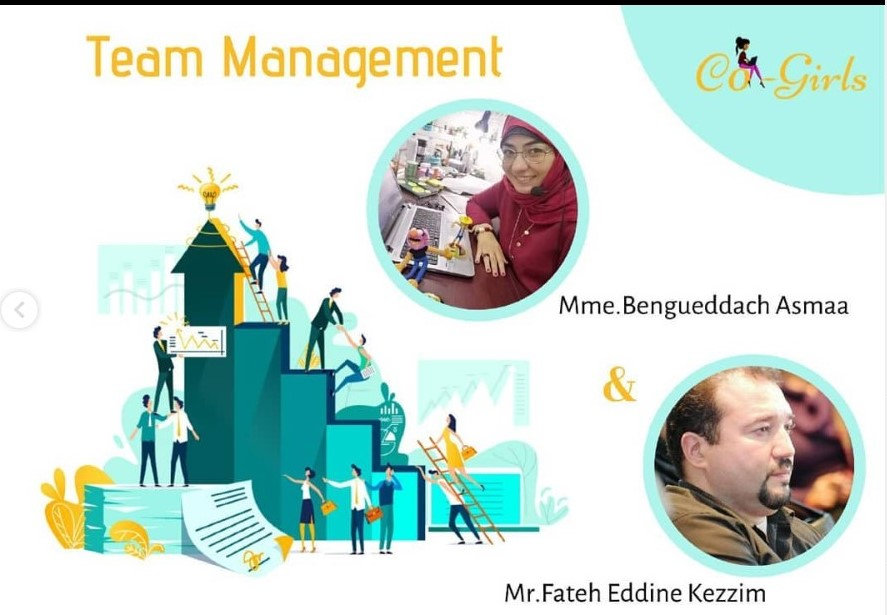

l'apparition du co-girls au journal, un premier projet vers un premier pas vers la réussite. Un spécial remerciement à Mme Asmaa Bengueddach, que nous appelons " l'honneur du co-girls " , qui a donné naissance à ce club, qui nous a accordé sa confiance, qui a crue en nous et qui nous a poussé vers la réussite. Nous remercions toute l'équipe co-girls qui a contribuer a ce premier projet dédié au tourisme avec des idées innovantes, la pratique, le design et la programmation, nous sommes fière de cette belle collaboration qui a permis la réalisation du prototype du projet dans très peu de temps.
Today, The Co-girls club was honored to be present at #khotwa students fair for the opening day. We received many student girls from different specialities, they discovered what the club is based on and what are our signs and passions, and we shared with them all activities which we are interested in, projects, workshops and a lot of surprises and opportunities.
Comment réussir une présentation en public ? Garder l'attention du public ou la perdre dépend largement de la façon d'exposer et de parler. Comment parler en public, comment cacher son stresse et comment bien présenter son exposé ou son talk devant un jury et un public, cela est le topic du prochain Co-girls workshop présenté par Mme Bengeuddach.
La quarantaine fait sortir apparemment la curiosité d'apprendre de nouvelles choses chez les Co-Girls comme si on est toutes réunies à la même table et c'était possible aujourd'hui grâce à la technologie de nos jours et grace à madame Asmaa Bengueddach et monsieur Fatah Kezzim pour nous animer une formation en ligne qui abordait le topic de comment manager une équipe en présence des autres étudiants et des profs de différentes régions en Algérie. On appris à savoir les outils essentiels qui caractérisent un bon leader, comment connaître son profil de leadership, des méthodes à travailler avec pour réaliser un projet tout ayant le sens d'équipe.
workshop and a new opportunity for you to add more skill. In this workshop you will have more informations and experience on web development. You will discover the principal and constraints to create a website.
We are too happy to celebrate this day that comes once a year, the day that represents a category of women who were mistreated. This day reminds us of these women and what they did to fight this kind of discrimination. Despite all the obstacles, they managed to prove their existence in the male community. Women are now in positions that no one can believe that they will be able to take them, but thanks to their determination, patience and self-confidence, anything is possible for them and they have shown that they are capable of doing anything.
Lorsque deux club s'accomplit ‚ù§Ô∏èüíô teamopenminds and Co-Girls
le grand merci est à madame asmaa bengueddach
Nous tenions à vous écrire un « Merci » sincère pour votre soutien,et vos conseils et d'avoir enrichi nos connaissances et de nous avoir guidé. Nous avons grandement apprécié votre soutien, votre implication et votre expérience.
si vous voulez inscrire à notre club
Vous êtes le bienvenu
inscription